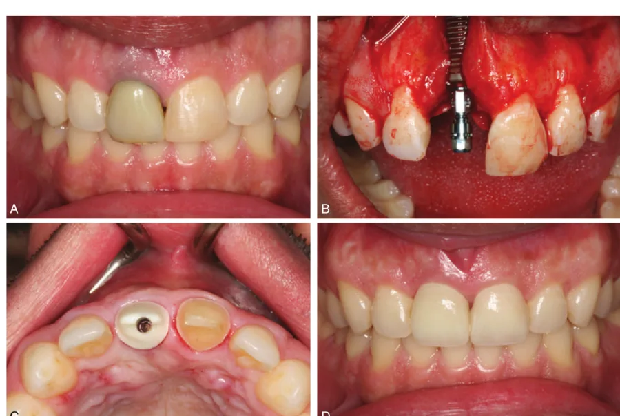

نسخه استخراجشده؛ ترجمه یا تأیید علمی انجام نشده است. وضعیت: captured
این چهار واژه را دقیق بشناس؛ بقیهی یونیت بر آنها بنا میشود:
و اندیکاسیون بریج: «وقتی دندان یا دندانهایی در قوس غایباند و دندانهای مجاور از نظر اندودانتیک، ترمیمی و پریودنتال سالم و از نظر بیومکانیکی درست ارزیابی شوند».
و اکنون اصل روشن این بحث: «بهطور کلی، ترمیمهای متکی بر ایمپلنت انتخاب اول برای جایگزینی یک یا چند دندان غایب هستند. در نبود منع مصرف، دندانپزشکان باید این گزینه را بهجای اقدام به درمانهای بسیار تهاجمیتر و برگشتناپذیر مثل بریج پیشنهاد دهند.»
پس چرا این یونیت وجود دارد؟ چون پنج موقعیت وجود دارد که در آنها بریج ارزشمند است:
و بلافاصله یک هشدار متوازنکننده: «دندانپزشکان باید از تراش بیرویهی دندانهای سالم و ترمیمنشده برای جایگزینی دندانهای غایب پرهیز کنند، چون بریج میتواند خطر عوارض آینده را بالا ببرد و اگر بد برنامهریزی یا اجرا شود، حتی میتواند به از دست رفتن سریعتر دندان کمک کند.»
و بقای درازمدت بریج با دو دسته مسئله محدود میشود:
و یک نکته دربارهی ایمپلنت که گاهی فراموش میشود: «هر دندانی که قرار است جایگزین شود، نیازمند یک ایمپلنت نیست، و همهی دندانهای یک قوس میتوانند با حداقل چهار ایمپلنت جایگزین شوند.»

قاعدهی پایه ساده است: وقتی ایمپلنت گزینه نیست و بریج انتخاب میشود، «یک بریج سهواحدی که شامل یک پایهی مزیال و یک پایهی دیستال است، راهحل سرراستی است».
ولی دو استثنا وجود دارد، و هر دو دربارهی دندانهای قدامیاند.
استثنای اول — جایگزینی کانین. وقتی بریج قرار است کانین ماگزیلا یا مندیبل را جایگزین کند، «لترال کوچک ممکن است به سانترال اسپلینت شود تا از دریفت لترال بریج جلوگیری کند». بهکارگیری دو پایهی مجاور، دابل-اباتمنتینگ نامیده میشود.
چرا کانین اینقدر خاص است؟ چون در گوشهی قوس مینشیند. پانتیکی که در گوشه قرار میگیرد، بیرون از خط محور بینپایهای میافتد و نیروی چرخشی میسازد — همان چیزی که در درس دوم به آن برمیگردیم. و لترال، بهتنهایی، ریشهی کوچکی برای مقاومت در برابر آن چرخش دارد.
استثنای دوم — جایگزینی لترال ماگزیلا. «گاهی میتواند با کانتیلور کردن از یک ریتینر دیستال روی کانین جایگزین شود، به شرطی که کانین در سلامت پریودنتال کامل باشد و بار اکلوزال روی کانتیلور در حداقل نگه داشته شود.»
و شرط دوم را جدی بگیر: دقیقترش این است که نباید هیچ تماس اکلوزالی روی پانتیک، نه در سنتریک و نه در اکسکورسیون لترال وجود داشته باشد. و کانین «میتواند نقش پایهی تنها را بازی کند تنها اگر ریشهی بلند و حمایت استخوانی خوبی داشته باشد».
و یک جزئیات طراحی که پایداری را میسازد: باید «یک رست روی مزیال پانتیک در برابر یک تراش رست در اینله یا ترمیم فلزی دیگر روی دیستال سانترال» باشد تا از چرخش پانتیک و پایه جلوگیری شود؛ و سطح مزیال پانتیک میتواند کمی دور بخش دیستال سانترالِ درگیرنشده پیچیده شود تا پانتیک را فاسیولینگوالی تثبیت کند.
و یک هشدار صریح: «پیکربندی ریشهی سانترال، آن را به یک پایهی نامطلوب برای کانتیلور تبدیل میکند.» یعنی جهت کانتیلور اهمیت دارد: از کانین بله، از سانترال نه.
و بریج رزینباند — یک استثنای ساختاری. «بریجهای رزینباند ممکن است تنها از یک سمت نگه داشته شوند، که در آن حالت پانتیک یک کانتیلور محسوب میشود.» پایههای آنها میتوانند «دندانهای دستنخورده یا تنها با تراش حداقلی» باشند، چون گیر از باند فراهم میشود. جنسشان یا بیسمتال است که امکان اچ شدن میدهد، یا زیرکونیا.
و یک یافتهی بالینی جالب که خلاف شهود است: تجربهی بالینی با بریجهای رزینباند نشان داده «آنها وقتی طراحی کانتیلور استفاده شود موفقترند تا وقتی از هر دو سمت باند شوند، چون حرکت دندان باعث شکست باند میشود». یعنی در این یک مورد، کانتیلور مزیت دارد نه عیب.